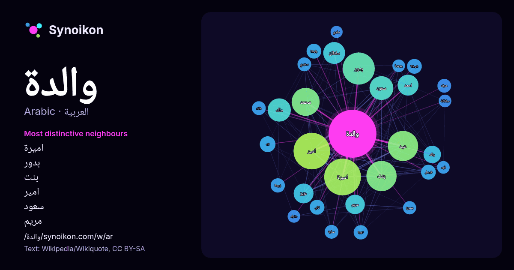

العربية · قائمة كلمات اليوم
والدة
“mother” · الكلمات الموجودة حولها في 595 ورودًا من ويكيبيديا, Wikiquote.

الجيران الأكثر تميّزًا
- اميرة 78×
- بدور 60×
- بنت 50×
- امير 47×
- سعود 31×
- مريم 24×
- سلطان 19×
- والد 18×
- عزيز 18×
- شيخة 16×
- نورة 15×
- سديري 14×
- عبد 14×
- ليلي 14×
- محمد 13×
- فيصل 13×
- اله 13×
- احمد 13×
- سارة 12×
- وايضا 12×
× = كم مرة أكثر مما في نصوص ويكيبيديا العامة.
الجيران الأكثر تكرارًا
- اميرة 93
- امير 92
- بدور 71
- بنت 63
- عبد 63
- محمد 54
- سعود 39
- ملك 37
- سلطان 33
- احمد 30
- الله 27
- عزيز 27
- مريم 26
- ال 25
- والد 21
- شيخ 20
- دور 18
- اله 17
- شيخة 15
- فيصل 15
في السياق
- وتوجد أمثلة عديدة على تكريم الأمومة، من بينها تبجيل مريم العذراء بوصفها والدة الإله، وكذلك الإشارات الإيجابية المتعددة إلى دور المرأة الناشطة كأم في سفر Wikipedia snippets · أم
- ولذا فإن ثيؤطوكس تعني والدة الإله. في سنة 431، اعترف المجمع المسكوني الثالث بهذا المصطلح على أنه مصطلح صحيح وأن «مريم العذراء هي والدة الإله لأن ابنها يسوع Wikipedia snippets · والدة الإله
- 1955 ) ، ممثلة بحرينية. دخلت التمثيل بمساعدة ابنتها الممثلة شيماء سبت، وهي والدة الممثلات شيماء وشذى وأبرار وشيلاء سبت. عجايب زمان. العولمة. نيران. السديم Wikipedia snippets · فاطمة إسماعيل (ممثلة)
- شوانة بنت حمود بن أحمد البوسعيدية (توفيت سنة 2018) هي والدة هيثم بن طارق سلطان عمان. قيس بن طارق (توفي في 22 مارس 2011). هيثم بن طارق أسعد بن طارق شهاب Wikipedia snippets · شوانة بنت حمود البوسعيدية
- والدة (رواية) تعديل - تعديل مصدري - تعديل ويكي بيانات والدة هي رواية للكاتب فرانسوا مورياك نُشرت في ديسمبر 1923 عن دار نشر غراسيه، وترجمت إلى العربية Wikipedia snippets · والدة (رواية)
- القصر في منطقة الصّدِّيق في محافظة حولي في الكويت. سُمِّيت الدار نسبة إلى والدة الشيخ، الشيخة «مريم مريط الحويلة» حرم أمير الكويت العاشر أحمد الجابر الصباح Wikipedia snippets · دار مريم
- صحيفة الرسالة [وصلة مكسورة] نسخة محفوظة 26 أبريل 2020 على موقع واي باك مشين والدة حسن سلامة: ابني بريئ نسخة محفوظة 19 مايو 2015 على موقع واي باك مشين بوابة Wikipedia snippets · حسن عبد الرحمن سلامة
- جامع برتونهال والدة السلطان أيضًا باسم مسجد الوالدة في أكسراي (بالتركية: Pertevniyal Valide Sultan Camii، Aksaray Valide Sultan Camii)،، هو أحد المساجد Wikipedia snippets · جامع برتونهال والدة السلطان
كلمات أخرى
- أغنية
- إله
- تاريخ
- جبل
- جرس
- جزيرة
- جسر
- حديقة
- حصان
- حقيقة
- حياة
- خبز
- خريطة
- خريف
- ذهب
- زمن
- ساعة
- شاي
- شتاء
- صحة
- صحراء
- صمت
- صيف
- طبيعة
- طريق
- طعام
- ظل
- عائلة
- عاصفة
- عسل
- علم
- عمل
- غابة
- فن
- قطار
- قطة
- قلب
- قوة
- كلب
- لغة
- ماء
- مال
- مدينة
- مرآة
- مطر
- ملح
- مناخ
- موت
- نجم
حُسبت مسبقًا في 2026-10-09 بالإعدادات الافتراضية (±5 كلمات، مدوّنة متوسطة). يمكن للخريطة التفاعلية تحديثها ببيانات حية.
واجهة مترجمة آليًا؛ نرحب بالتصحيحات.